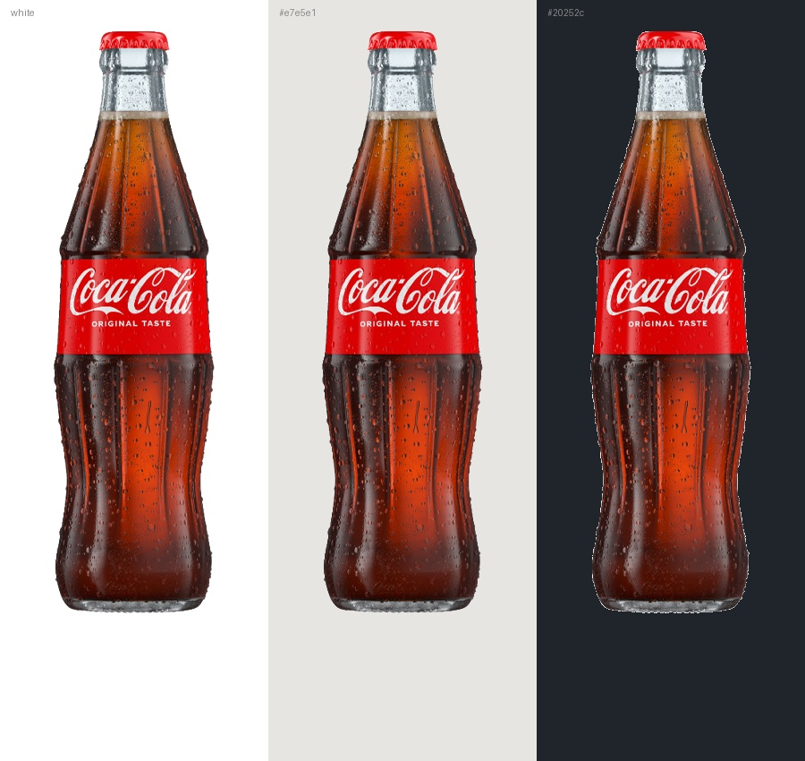
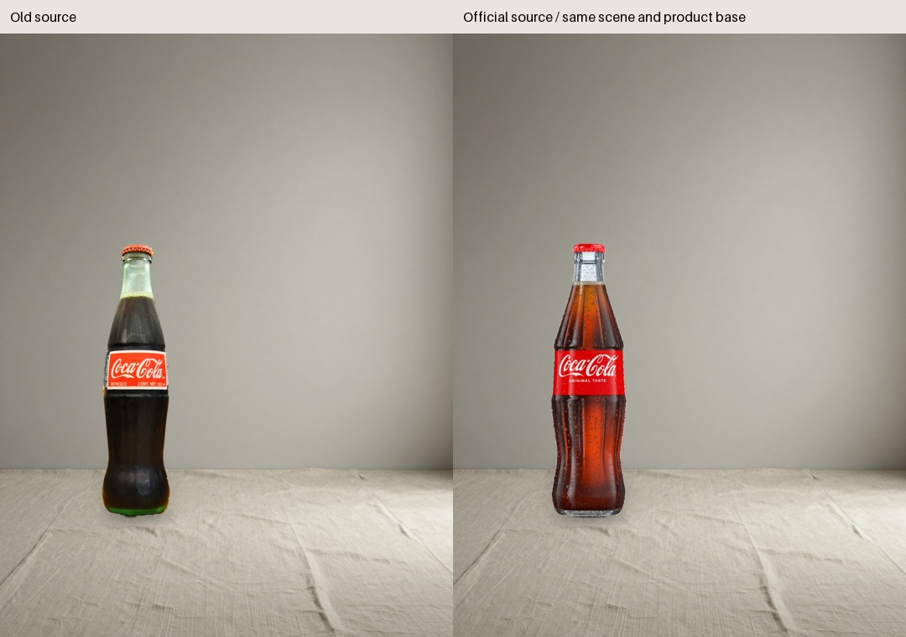
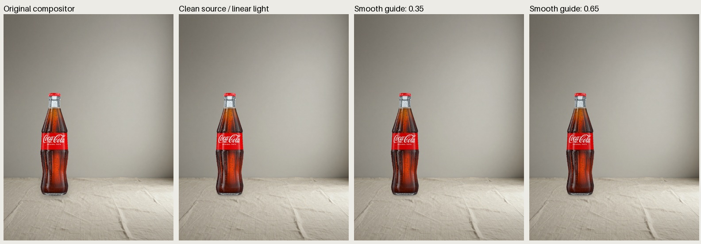
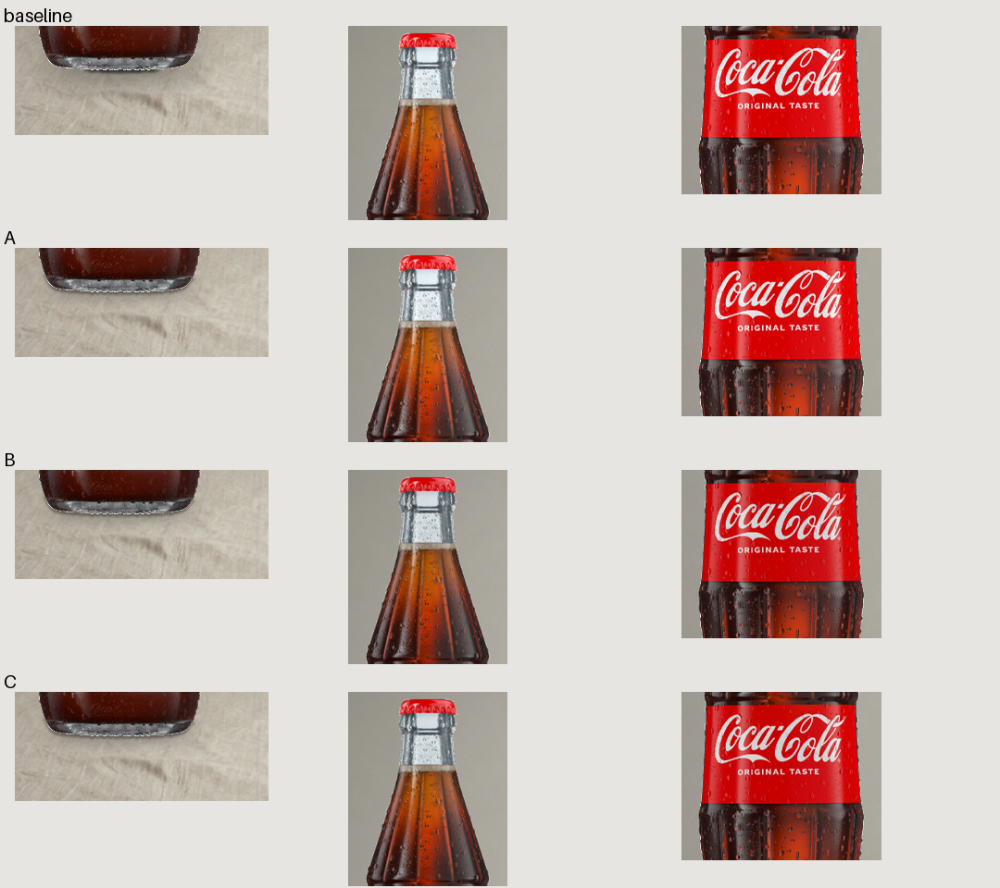
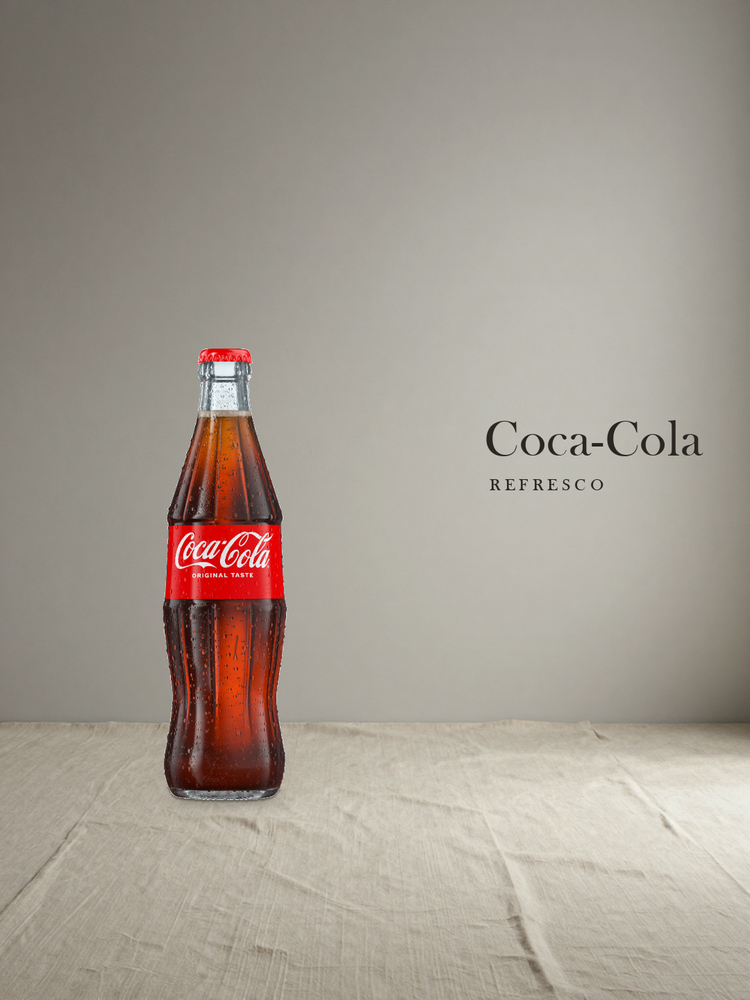

已重新生成 ComfyUI 光照引导，再渲染 A/B/C。千问选择 A，但瓶底浅色细边仍未过关：NEEDS_REVIEW。原图仅 750×750，裁切商品 180×650；瓶颈保留白底拍摄透射颜色，不能用于证明真实折射或高清商业交付。
报告与来源 · 真实评审 · 新版源图的 ComfyUI 工作流（需安装新节点；该 UI 图未在浏览器中实跑）





沿用旧排版，只验证源图与融合。